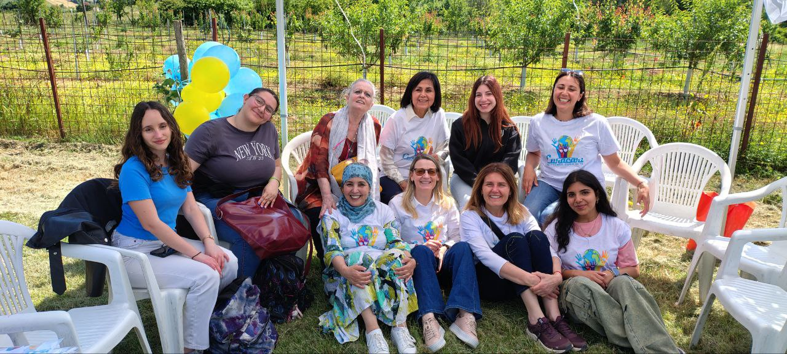
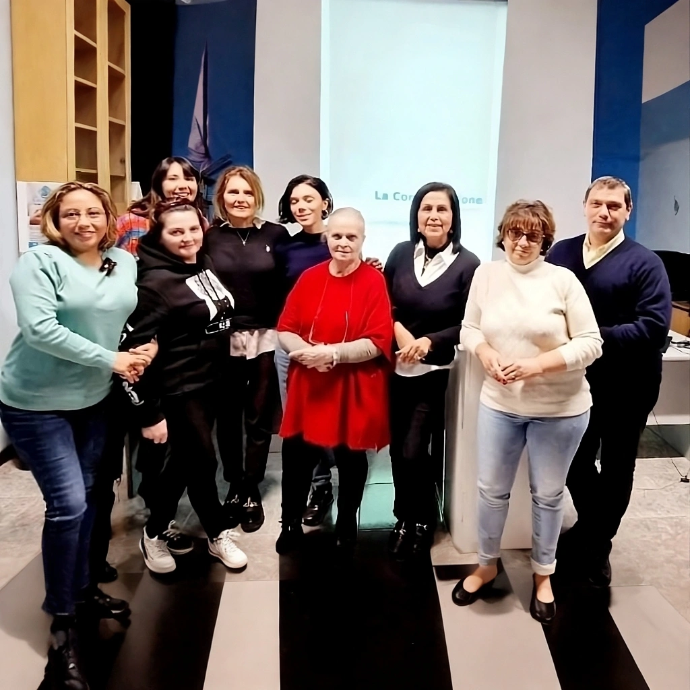
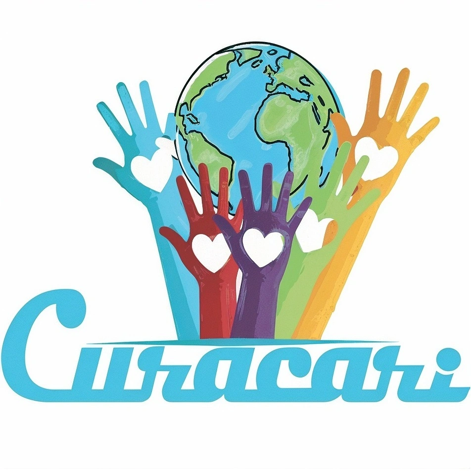

Insieme ai caregiver, ogni giorno.
Chiama lo sportello: 353 461 8282
Cosa facciamo
Siamo sul territorio del distretto di Sassuolo e Modena e offriamo orientamento, supporto e sostegno ai caregiver familiari e agli assistenti familiari, con formazione, tutoring e counseling individuali. Operiamo presso la Casa della Salute di Sassuolo e la sede VIC – Volontari in Campo di Maranello.
Sostegno Relazionale
Ascoltiamo i caregiver e li aiutiamo a prendersi cura di sé, con un approccio rispettoso delle diversità culturali e personali.
Orientamento ai Servizi
Accompagniamo le famiglie nell'accesso ai servizi sociosanitari del territorio, supportandole nelle pratiche burocratiche.
Formazione e Tutoring
Organizziamo corsi e percorsi formativi per caregiver e assistenti familiari, per migliorare competenze pratiche e relazionali.
Incontri di Sostegno Emotivo
Incontri di sostegno emotivo rivolti a caregiver familiari e assistenti, presso la Casa della Salute di Sassuolo e la sede VIC di Maranello.
Counseling Individuale
Incontri individuali di sostegno e counseling per caregiver e assistenti familiari, presso la sede VIC di Gorzano, Maranello e la Casa della Salute di Sassuolo.
Consulenza Legale
Orientamento su DAT (Disposizioni Anticipate di Trattamento) e Amministrazione di Sostegno (ADS), per tutelare i propri cari.



I nostri obiettivi formativi
Cura Solidale
Vogliamo contribuire all'umanizzazione e alla gentilezza delle cure, promuovendo ascolto, accoglienza, empatia e inclusione.
Empowerment
Formiamo volontari, caregiver e assistenti per promuovere l'autonomia attraverso l'educazione socio-sanitaria.
Capacità e Potenzialità
Aumentiamo le capacità dei caregiver per rispondere con più sicurezza alle sfide della non autosufficienza.
Competenze Pratiche
Forniamo conoscenze pratiche per organizzare e svolgere attività di cura in modo efficace e sicuro.
Conoscenze Specifiche
Offriamo informazioni sulle problematiche fisiche, emotive, assistenziali e curative delle persone anziane, fragili o non autosufficienti.
Lasciaci un messaggio
Hai domande, vuoi sapere come funziona lo sportello o vuoi collaborare con noi? Scrivici.
